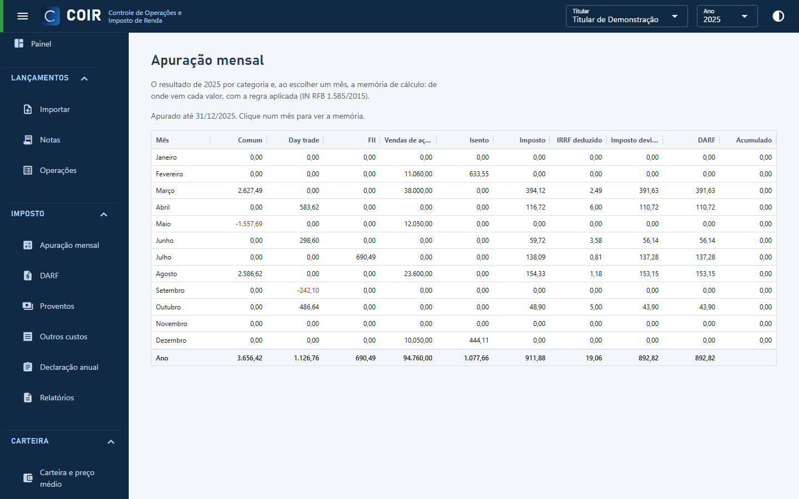
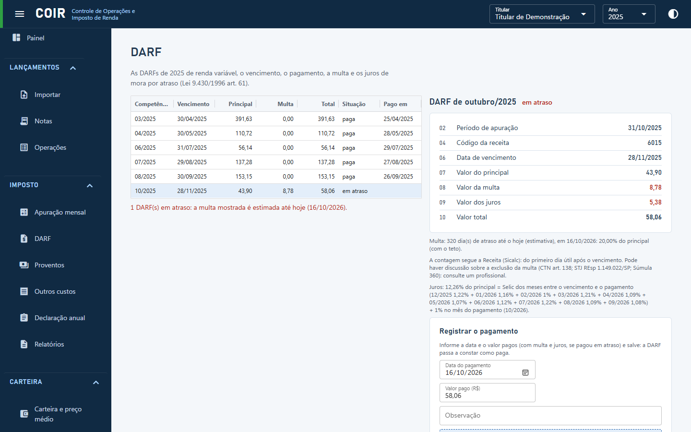
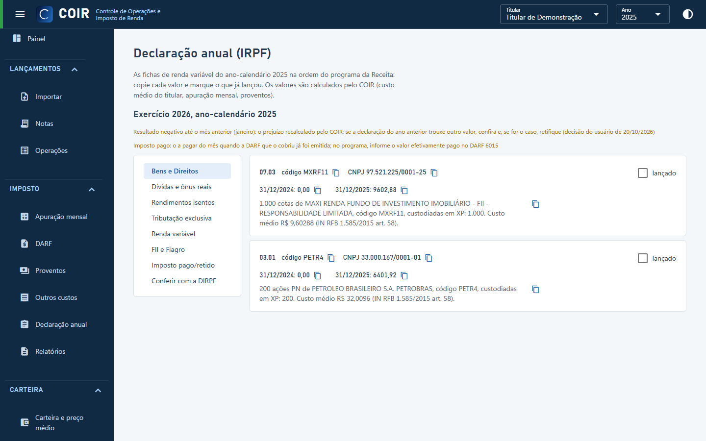

De onde vêm os números
Depois de importar as notas de corretagem (e, de preferência, a movimentação da Área do Investidor da B3), o COIR calcula tudo no seu computador, por titular: o preço médio somando todas as corretoras e contas, o resultado de cada mês separado em operações comuns, day trade e FII, e o imposto. O titular e o ano escolhidos no topo valem para todas as telas.
Cada valor mostra as operações e a regra aplicada, com a norma da Receita. Ainda assim, o COIR não substitui a orientação de um contador: confira antes de pagar uma DARF ou entregar a declaração. As fontes fiscais usadas estão listadas.
Apuração mensal
A tela Imposto › Apuração mensal mostra o imposto mês a mês por categoria (comum, day trade, FII): vendas de ações no mês (limite de R$ 20 mil), ganho isento, resultado, prejuízo anterior, base de cálculo, imposto, IRRF deduzido e DARF. Ao escolher um mês, aparece a memória de cálculo, com cada movimento e a regra aplicada; um clique no movimento abre a nota.

DARF mensal
A tela Imposto › DARF lista as DARFs do ano (código 6015) com vencimento no último dia útil do mês seguinte, principal, multa, total e situação: a pagar, em atraso, paga, acumulada abaixo de R$ 10 ou em apuração. Ao escolher uma, os campos aparecem como no próprio DARF, com a explicação da multa e dos juros de mora. Em Registrar o pagamento você informa a data e o valor pagos e pode anexar o comprovante em PDF. O Painel mostra sempre a DARF da vez e as pendências.

IRRF
O imposto retido na fonte que aparece nas notas é deduzido na apuração do mês, e o saldo que sobra é transportado para os meses seguintes. O relatório IRRF e exclusiva reúne esses valores no ano, e a ficha de imposto pago aparece na declaração anual.
Proventos
A tela Imposto › Proventos traz dividendos, JCP, rendimentos de FII, reembolsos de aluguel de ações (BTC) e atualizações pela Selic, lidos da movimentação da B3 e separados como no IRPF: rendimentos isentos e tributação exclusiva.
Declaração anual (DIRPF)
A tela Imposto › Declaração anual apresenta as fichas de renda variável do ano na ordem do programa da Receita: Bens e Direitos (um item por ativo, com código, CNPJ, situação em 31/12 dos dois anos e discriminação pronta), Dívidas e ônus reais, Rendimentos isentos, Tributação exclusiva, Renda variável (mês a mês) e Imposto pago. Cada valor tem botão de copiar, e você marca o que já foi lançado. Conferir com a DIRPF lê o PDF da declaração entregue e aponta as diferenças.

Relatórios em Excel, CSV e PDF
A tela Imposto › Relatórios exporta, sem precisar do Excel instalado, para a pasta relatorios\<ano> dentro da pasta de dados:
- Resumo fiscal
- O ano inteiro: resultado por categoria e o imposto, o IRRF e a DARF de cada mês.
- DARFs
- As DARFs do ano e os meses operados.
- IRPF mês a mês
- A ficha de renda variável, mês a mês.
- IRRF e exclusiva
- O IRRF das notas e os rendimentos de tributação exclusiva.
- Operações finalizadas
- Cada venda (ou recompra) com o custo pelo preço médio e o resultado.
- Evolução e Prejuízos
- O resultado ao longo do ano e o prejuízo a compensar por categoria.
- Conferência do PM e Carteira
- A trilha do preço médio e a posição em 31/12.
- Bens e Direitos e Declaração IRPF
- As fichas da declaração anual.
- Livro de notas e Proventos
- As notas importadas e os proventos do ano.
Vindo da versão 2 (planilha)
Até a versão 2, o COIR gravava o resultado num arquivo CPF.xlsb com várias planilhas. Na versão 3 elas viraram telas do programa:
| Planilha da v2 | Onde fica na v3 |
|---|---|
| Normais_Op, DayTrade_Op e _Dados | Lançamentos › Notas e Operações |
| Normais_Cont e DayTrade_Cont | Imposto › Apuração mensal |
| DARF | Imposto › DARF |
| Isentos | Imposto › Proventos e Declaração anual |
| Eventos B3 | Carteira › Eventos (propostos a partir das tabelas públicas da B3) |
| Custodia inicial | Sistema › Cadastros › Saldos iniciais |
| Alocação, Balanceamento, Patrimônio, Rendimento e Manejo | Fora da versão 3, previstos para uma fase futura |
A versão 3 não lê o arquivo da v2: ela refaz tudo a partir dos PDFs das notas. Alguns números podem mudar, porque a versão 3 corrige pontos da versão 2; as notas da versão explicam cada caso. A versão 2 continua disponível.